Las transformaciones de México en el siglo XIX
Durante el siglo XIX México vivió tres procesos fundamentales que cambiaron por completo su organización política, económica y social: la Independencia, el liberalismo y las invasiones extranjeras. Estos acontecimientos no ocurrieron de forma aislada, sino que están conectados entre sí. La Independencia permitió que México dejara de ser colonia, pero el nuevo país nació débil, con deudas, conflictos internos y sin un gobierno estable. Esa debilidad fue aprovechada por otros países para intervenir en México. Por otro lado, el liberalismo surgió como una propuesta para organizar al país con leyes iguales para todos, una Constitución y la separación entre la Iglesia y el Estado.
En esta página web encontrarás la explicación completa de cada proceso, sus causas, personajes, etapas, consecuencias y su importancia en la actualidad. Al final hay una tabla comparativa, un video educativo y un cuestionario para comprobar lo aprendido.
Independencia
11 años de lucha para terminar con 300 años de dominio español y lograr que México se gobernara por sí mismo.
Liberalismo
Ideas de libertad, igualdad ante la ley, Constitución y separación Iglesia-Estado. Su punto más alto fue la Reforma de Benito Juárez.
Invasiones Extranjeras
Francia y Estados Unidos intervinieron en México por deudas, territorio e intereses económicos. México defendió su soberanía.
La Independencia de México (1810 - 1821)
La Independencia de México fue un proceso armado, político y social que inició la madrugada del 16 de septiembre de 1810 con el Grito de Dolores y terminó el 27 de septiembre de 1821 con la entrada del Ejército Trigarante a la Ciudad de México. Duró 11 años.
Antes de la Independencia, México era la Nueva España, una colonia controlada por España desde 1521. Los españoles peninsulares tenían los mejores cargos, las mejores tierras y los privilegios, mientras que los criollos, indígenas, mestizos y castas vivían en desigualdad y pobreza.
Causas de la Independencia
- Desigualdad social: Los peninsulares tenían privilegios, los criollos no podían ocupar altos cargos, y los indígenas y mestizos eran explotados.
- Problemas económicos: Altos impuestos, monopolio comercial con España, prohibición de comerciar con otros países y pobreza en el campo.
- Ideas de la Ilustración: Libertad, igualdad, soberanía popular y derechos del pueblo, difundidas por pensadores como Rousseau, Montesquieu y Voltaire.
- Ejemplo de otros países: La Independencia de Estados Unidos en 1776 y la Revolución Francesa en 1789 mostraron que era posible cambiar de gobierno.
- Crisis en España: En 1808 Napoleón invadió España y puso a su hermano José Bonaparte como rey. Esto dejó a la Nueva España sin un rey legítimo.
- Conspiraciones: Grupos de criollos en Querétaro, Valladolid y Dolores planeaban levantarse contra el gobierno virreinal.
Personajes importantes
- Miguel Hidalgo y Costilla: Cura de Dolores. Dio el Grito de Dolores el 16 de septiembre de 1810. Es considerado el Padre de la Patria.
- Ignacio Allende: Militar criollo, segundo al mando en el inicio de la lucha.
- José María Morelos y Pavón: Sacerdote y estratega militar. Organizó el Congreso de Chilpancingo y escribió los Sentimientos de la Nación en 1813.
- Vicente Guerrero: Líder insurgente del sur. Mantuvo la lucha viva. Su frase fue: "La patria es primero".
- Agustín de Iturbide: Militar realista que se unió a Guerrero con el Plan de Iguala y logró la consumación de la Independencia.
- Josefa Ortiz de Domínguez: La Corregidora de Querétaro, avisó a Hidalgo que la conspiración había sido descubierta.
- Leona Vicario: Apoyó con dinero e información al movimiento insurgente.
Etapas principales
- Inicio (1810 - 1811): Grito de Dolores. Hidalgo y Allende toman Dolores, Guanajuato, Valladolid y Guadalajara. Hidalgo es fusilado en Chihuahua en 1811.
- Organización (1811 - 1815): Morelos organiza el movimiento, toma Acapulco y Oaxaca, convoca al Congreso de Chilpancingo y promulga la Constitución de Apatzingán en 1814. Morelos es fusilado en 1815.
- Resistencia (1815 - 1820): La lucha casi desaparece. Solo quedan grupos como el de Vicente Guerrero en el sur y Guadalupe Victoria en Veracruz.
- Consumación (1821): Iturbide proclama el Plan de Iguala, se une con Guerrero en el Abrazo de Acatempan, forma el Ejército Trigarante y entra a la Ciudad de México el 27 de septiembre de 1821.
Consecuencias: México dejó de ser colonia, pero heredó pobreza, deudas, desorganización política y conflictos entre grupos que querían un imperio o una república.
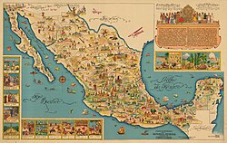
Grito de Dolores, 1810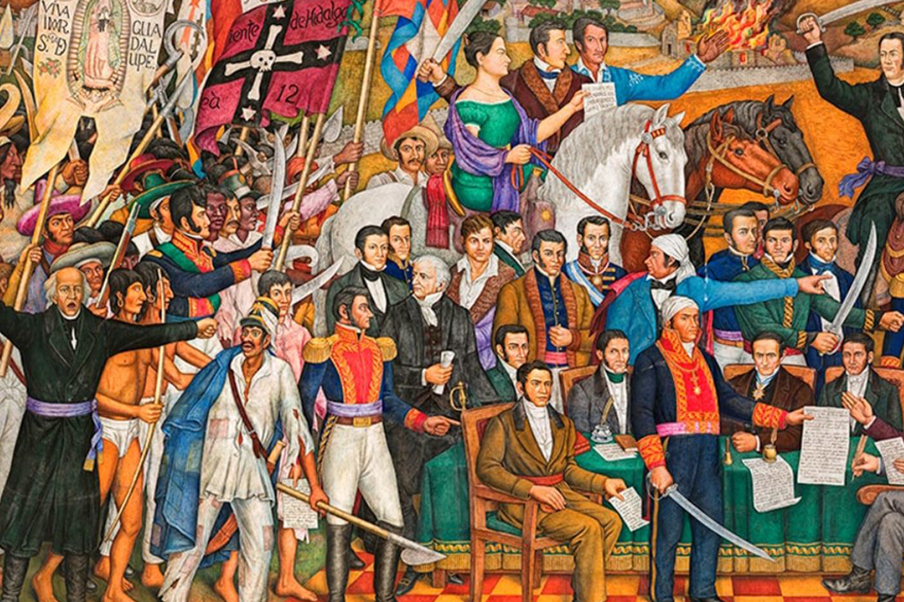
Inicio de la lucha por la Independencia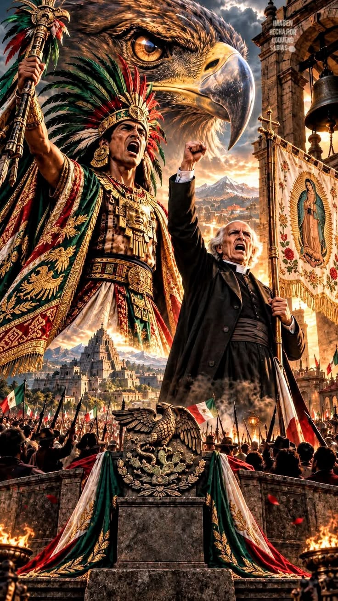
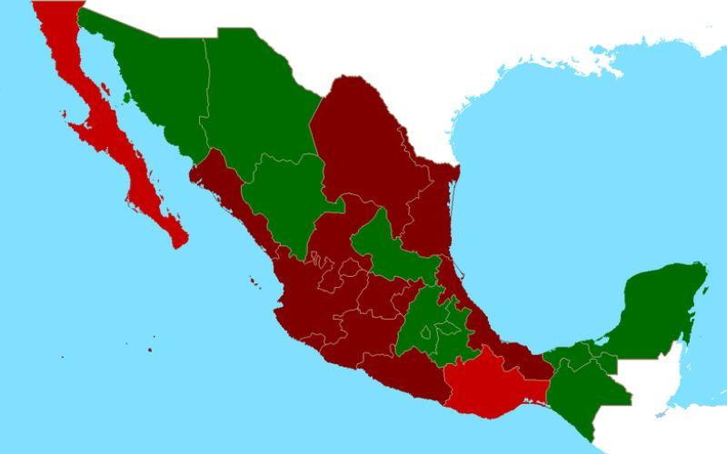
El Liberalismo en México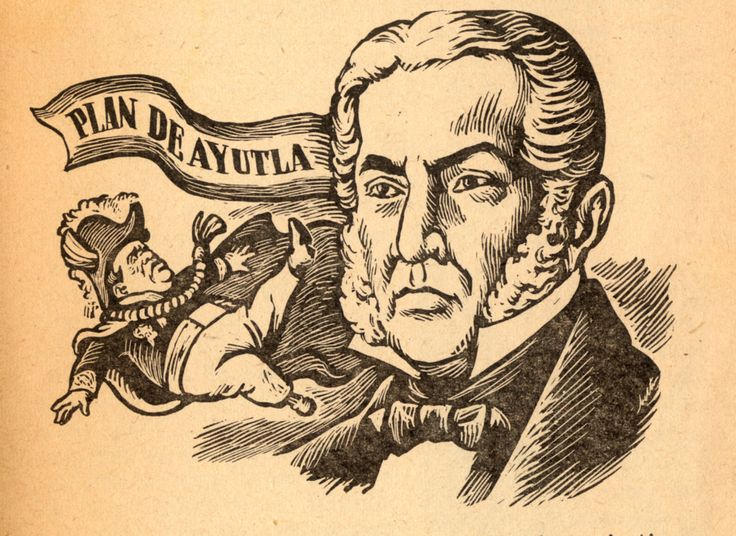
Ideas de libertad e igualdad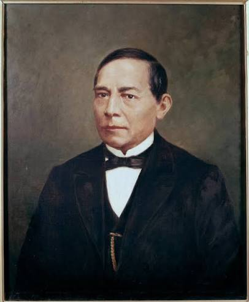
Benito Juárez, líder del liberalismo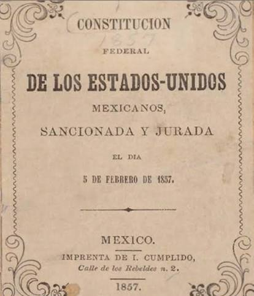
Constitución de 1857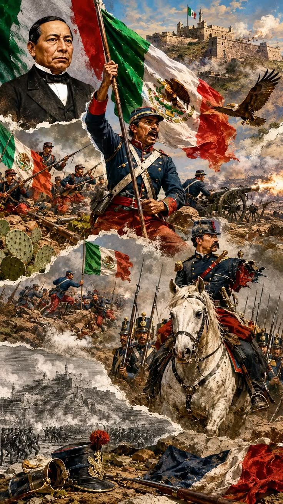
El liberalismo mexicano (1833 - 1876)
El liberalismo fue una corriente de pensamiento político y económico que defendió las libertades individuales, la igualdad ante la ley, la propiedad privada, la educación laica y la participación de los ciudadanos en la vida política. En México, sus ideas tuvieron gran importancia durante todo el siglo XIX.
Después de la Independencia, México quedó dividido en dos grupos: liberales y conservadores. Los liberales querían un gobierno republicano, federal, con leyes iguales para todos y separación entre la Iglesia y el Estado. Los conservadores querían un gobierno centralista, con privilegios para la Iglesia y el ejército.
Características del liberalismo
- Defensa de las libertades individuales: Libertad de expresión, de prensa, de asociación, de trabajo y de creencias.
- Igualdad jurídica: Que no existieran fueros ni privilegios, que todos fueran iguales ante la ley.
- Separación entre la Iglesia y el Estado: Que el gobierno no dependiera de la Iglesia.
- Importancia de las leyes y la Constitución: Que el país se gobernara por leyes escritas.
- Educación laica y gratuita: Que la escuela fuera para todos.
- Propiedad privada: Que las tierras pudieran comprarse y venderse libremente.
Personajes destacados
- Benito Juárez: Indígena zapoteco de Oaxaca, abogado y presidente de México. Defendió la República durante la Segunda Intervención Francesa. Su frase: "Entre los individuos, como entre las naciones, el respeto al derecho ajeno es la paz".
- Melchor Ocampo: Impulsó las Leyes de Reforma y la separación Iglesia-Estado.
- Miguel Lerdo de Tejada: Autor de la Ley Lerdo, que obligaba a vender las propiedades de la Iglesia.
- Valentín Gómez Farías: Primer presidente que intentó aplicar reformas liberales en 1833.
Las Leyes de Reforma (1855 - 1863)
- Ley Juárez (1855): Eliminó los fueros de la Iglesia y del ejército.
- Ley Lerdo (1856): Obligó a vender las propiedades de la Iglesia.
- Ley Iglesias (1857): Prohibió cobrar altos costos por bautizos, bodas y entierros.
- Constitución de 1857: Estableció la República federal, la igualdad ante la ley y la libertad de expresión.
- Leyes de Reforma de 1859: Nacionalización de los bienes de la Iglesia, matrimonio civil, registro civil y libertad de cultos.
Video educativo - El Liberalismo y la Reforma
Observa este video para entender mejor las Leyes de Reforma y a Benito Juárez:
Si no carga el video, velo aquí directo: Ver video en YouTube - Leyes de Reforma
Tabla - Leyes de Reforma
| Ley | Año | ¿Qué establecía? |
|---|---|---|
| Ley Juárez | 1855 | Eliminó los fueros de la Iglesia y el ejército |
| Ley Lerdo | 1856 | Obligó a vender propiedades de la Iglesia |
| Ley Iglesias | 1857 | Prohibió cobros altos por bautizos y bodas |
| Constitución de 1857 | 1857 | Igualdad ante la ley y libertad de expresión |
| Leyes de Reforma | 1859 | Matrimonio civil, Registro Civil y libertad de cultos |
Guerra de Reforma (1858 - 1861)
Los conservadores no aceptaron la Constitución de 1857 ni las Leyes de Reforma y se levantaron en armas. Se formaron dos gobiernos: el liberal de Juárez en Veracruz y el conservador en la Ciudad de México. Después de 3 años de guerra, los liberales ganaron.
Importancia en la actualidad: Gracias al liberalismo hoy tenemos Registro Civil, matrimonio civil, educación laica y gratuita, libertad de expresión y una Constitución que protege los derechos de todos.
Invasiones extranjeras en México (1838 - 1867)
Durante el siglo XIX, México enfrentó intervenciones militares de otros países. Estas ocurrieron por diferentes motivos: las deudas que México no podía pagar, las disputas territoriales, los intereses económicos y políticos de las potencias extranjeras, y la inestabilidad política interna de México.
Intervenciones importantes
- Primera intervención francesa (1838 - 1839) - Guerra de los Pasteles: Francia reclamó una indemnización muy alta que México no pagó. Francia bloqueó el puerto de Veracruz y bombardeó el fuerte de San Juan de Ulúa.
- Guerra con Estados Unidos (1846 - 1848): Texas se separó en 1836 y en 1845 se unió a Estados Unidos. La guerra terminó con el Tratado de Guadalupe Hidalgo en 1848. México perdió más de la mitad de su territorio: California, Nevada, Utah, Arizona, Nuevo México, Texas y parte de Colorado, Wyoming, Kansas y Oklahoma.
- Segunda intervención francesa y Segundo Imperio (1862 - 1867): México no pudo pagar sus deudas. Francia invadió México y puso a Maximiliano de Habsburgo como emperador. El 5 de mayo de 1862 el ejército mexicano, dirigido por Ignacio Zaragoza, derrotó a los franceses en Puebla. En 1867 Maximiliano fue fusilado en el Cerro de las Campanas, Querétaro.
Personajes de las invasiones
- Ignacio Zaragoza: General que ganó la Batalla de Puebla el 5 de mayo de 1862.
- Benito Juárez: Presidente que defendió la República y la soberanía.
- Maximiliano de Habsburgo: Archiduque austriaco impuesto como emperador por Francia.
- Niños Héroes: Cadetes que defendieron el Castillo de Chapultepec el 13 de septiembre de 1847.
Consecuencias de las invasiones
- Pérdida de territorio: México perdió 2,400,000 kilómetros cuadrados, más de la mitad de su territorio original.
- Problemas económicos: Aumento de las deudas y pobreza para la población.
- Fortalecimiento del nacionalismo: El pueblo mexicano defendió su soberanía. El 5 de mayo se convirtió en fecha importante.
Importancia: Estos acontecimientos muestran cómo los intereses extranjeros y los conflictos internos influyeron en el desarrollo de México. La defensa de la soberanía sigue siendo un principio fundamental de México.
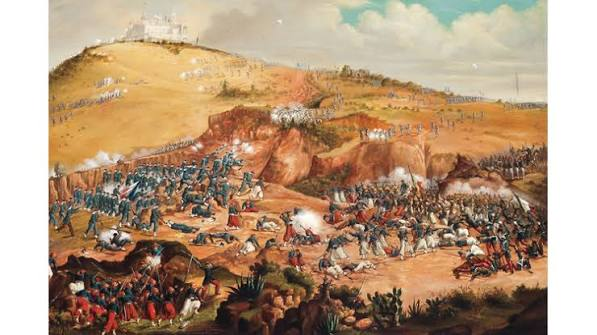
Invasiones extranjeras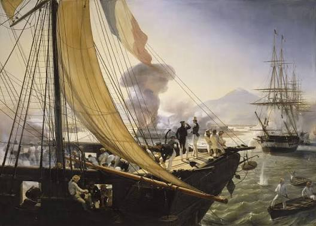
Intervención extranjera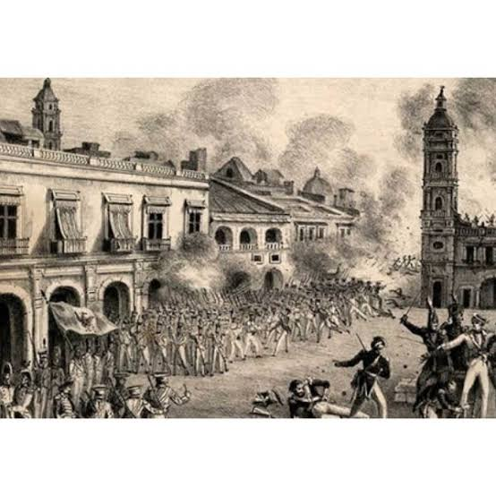
Intervención Francesa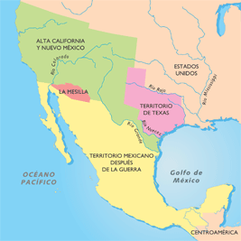
Mapa: México perdió más de la mitad de su territorio en 1848Tabla comparativa de los procesos
| Proceso | Años | Causa principal | Personaje principal | Resultado |
|---|---|---|---|---|
| Independencia | 1810 - 1821 | Desigualdad social y dominio español | Miguel Hidalgo y Vicente Guerrero | México libre de España |
| Liberalismo y Reforma | 1833 - 1876 | Privilegios de Iglesia y ejército | Benito Juárez y Melchor Ocampo | Constitución de 1857 y Leyes de Reforma |
| Guerra con Estados Unidos | 1846 - 1848 | Disputa por Texas y territorio | Antonio López de Santa Anna | Pérdida de más de la mitad del territorio |
| Primera Intervención Francesa | 1838 - 1839 | Reclamo por daños a franceses | Antonio López de Santa Anna | México acepta pagar indemnización |
| Segunda Intervención Francesa | 1862 - 1867 | Deudas y ambición de Napoleón III | Benito Juárez y Maximiliano | Triunfo de la República |
Línea del tiempo
- 1810: Grito de Dolores, inicio de la Independencia.
- 1821: Consumación de la Independencia.
- 1838: Primera Intervención Francesa, Guerra de los Pasteles.
- 1846 - 1848: Guerra México - Estados Unidos.
- 1857: Constitución liberal de 1857.
- 1862: Batalla de Puebla, 5 de mayo.
- 1867: Caída del Segundo Imperio y triunfo de la República.
Collage - Línea del tiempo en imágenes
Este collage resume en imágenes los momentos más importantes de la historia de México:
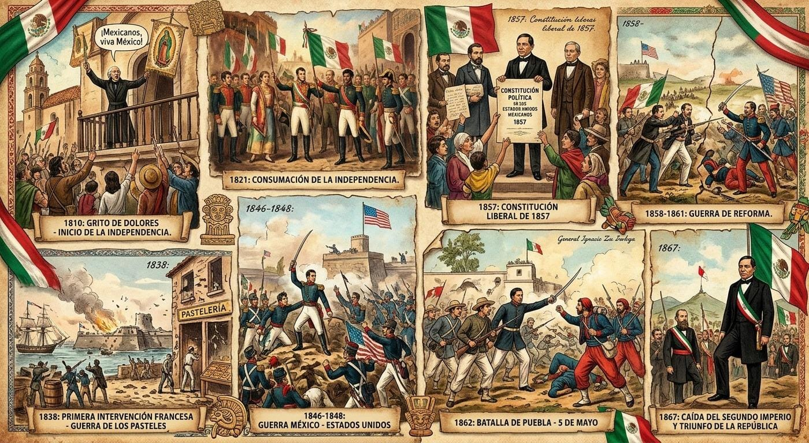
Collage: 1810 Grito de Dolores - 1821 Consumación - 1838 Guerra de los Pasteles - 1846 Guerra México-EE.UU. - 1857 Constitución - 1858 Guerra de Reforma - 1862 Batalla de Puebla - 1867 Triunfo de la República
Mini Quiz - Que aprendiste
Contesta las preguntas y dale enviar. Te va a salir una alerta con tu resultado.
Conclusión
La Independencia, el liberalismo y las invasiones extranjeras fueron procesos fundamentales para comprender la historia de México. La Independencia permitió que México naciera como país libre, el liberalismo le dio leyes, una Constitución y derechos para todos, y las invasiones extranjeras mostraron la importancia de defender la soberanía nacional.
Más información: Gobierno de México - INEHRM